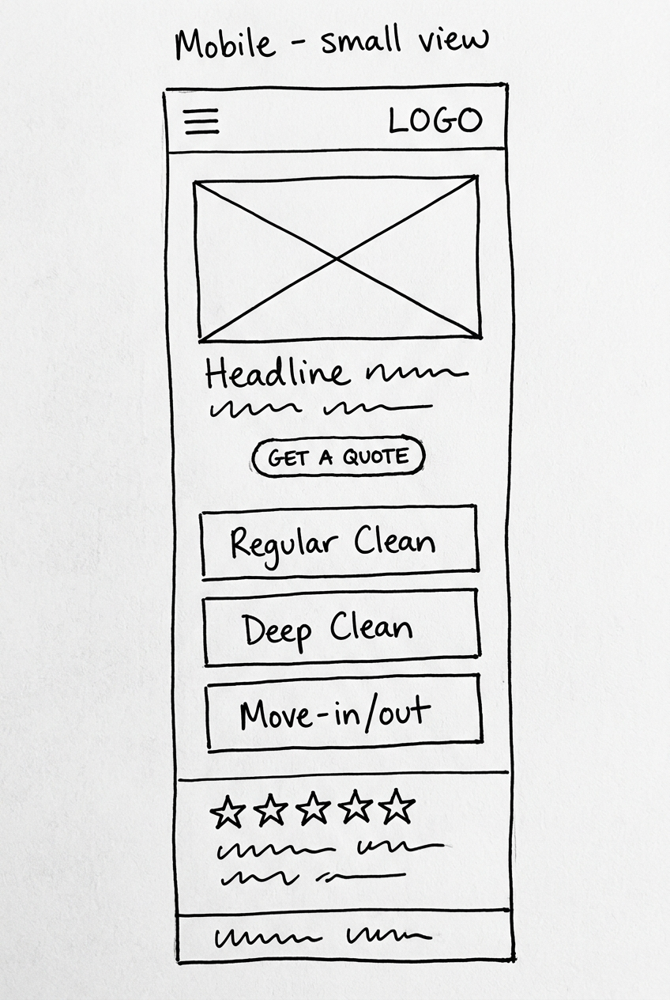
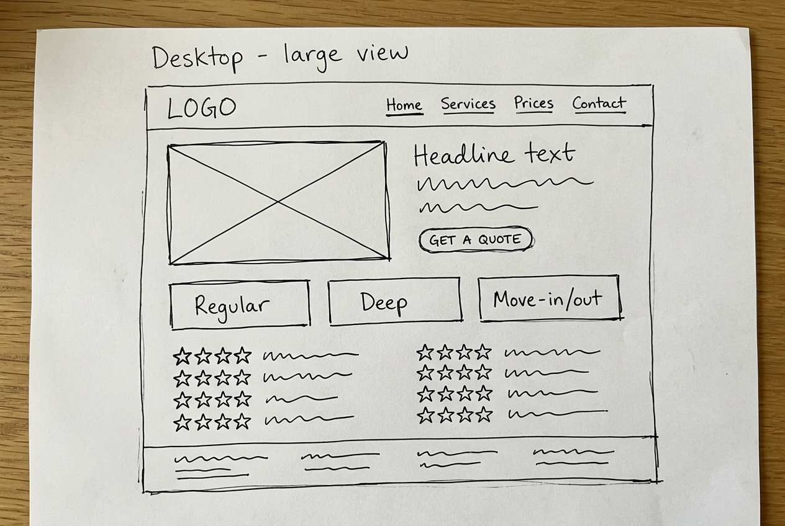

Site Name
Sparkle Home Cleaning
This name was selected because it is short, memorable, and immediately communicates the core promise of the business: a home that sparkles after every visit. The word "Sparkle" creates a positive, fresh feeling, while "Home Cleaning" clearly states the service, which also helps with search engine visibility.
Optional domain availability: sparklehomecleaning.net
Site Purpose
The site promotes a small residential cleaning business and serves as its main marketing and communication hub. It will present the services offered (regular cleaning, deep cleaning, and move-in/move-out cleaning), show a detailed comparison of what is included in each cleaning type, display prices and add-on services (such as carpet sanitizing and window cleaning), share before-and-after photos, and provide a quote request form so potential clients can easily contact the business.
Scenarios
Questions that a typical site visitor (a busy homeowner) might ask:
- What is the difference between a regular cleaning and a deep cleaning, and what exactly is included in each one?
- How much does a monthly cleaning cost for a house of my size, and how do I request a quote?
- Are extra services like carpet sanitizing or window cleaning available, and what do they cost?
Color Scheme
The palette conveys cleanliness, trust, and freshness. These colors are used throughout this document.
| Color | Swatch | Usage |
|---|---|---|
Deep Teal #0F4C5C |
Headings, header/footer backgrounds, navigation, links | |
Fresh Aqua #5FB5B0 |
Accents, section borders, buttons, table highlights | |
Soft White #F7FAFA |
Page background, text on dark backgrounds |
Typography
- Montserrat (600 / 700)
- Used for all headings (h1–h3), the site logo text, and buttons. Its clean geometric shapes match the professional, tidy feel of the brand.
- Open Sans (400 / 600)
- Used for paragraphs, lists, tables, forms, and all other body content. It is highly readable at small sizes on both mobile and desktop.
Wireframe
Hand-drawn sketches of the home page layout for small (mobile) and large (desktop) viewports.

